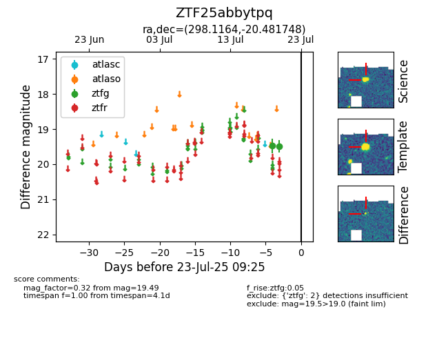

Target ZTF25abbytpq at 2025-07-23 12:37, see:
FINK: fink-portal.org/ZTF25abbytpq
Lasair: lasair-ztf.lsst.ac.uk/objects/ZTF25abbytpq
ALeRCE: alerce.online/object/ZTF25abbytpq
alt names
ZTF25abbytpq (ztf,fink)
coordinates:
equatorial (ra, dec) = (298.1164,-20.48175)
galactic (l, b) = (20.5136,-22.26843)
photometry
last ztfg=19.49
2 ztfg detections
